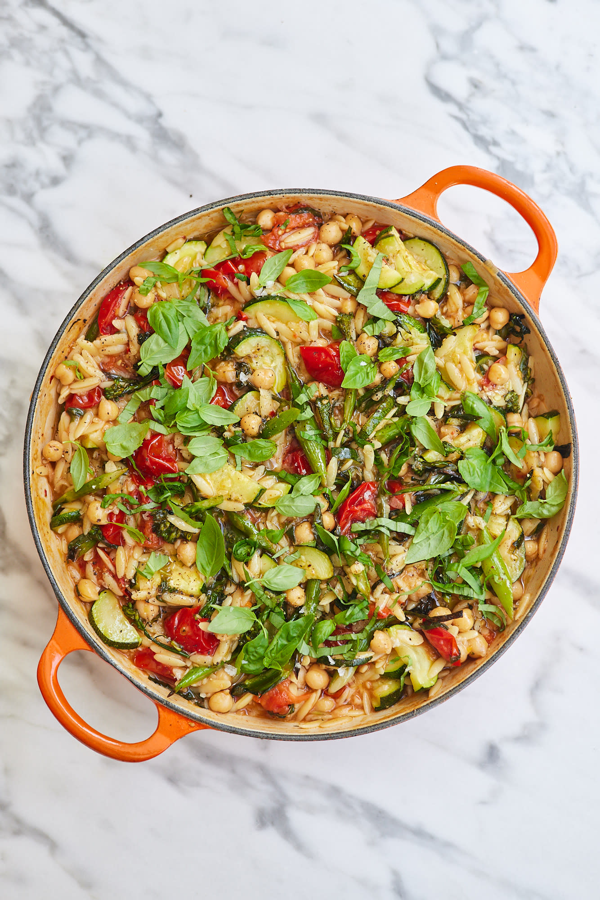

приготовление:
-
Очистить и мелко нарезать 3 луковицы шалота. Разогреть сковороду с оливковым маслом и обжарить лук на среднем огне. Очистить и мелко нарезать 5 зубчиков чеснока, добавить к луку вместе с 0,5 ч. л. хлопьев чили. Готовить около 15 минут до прозрачно-золотистого цвета, периодически помешивая.
-
Разогреть кастрюлю с толстым дном с небольшим количеством оливкового масла. Вымыть и нарезать мелкими кубиками 1 цуккини весом около 250 г, добавить в кастрюлю и посолить. Готовить на среднем огне около 10 минут, чтобы цуккини одновременно слегка тушился и обжаривался.
-
Вымыть 500 г помидоров черри, разрезать пополам и добавить к луку. Увеличить огонь и обжаривать всё вместе около 5 минут.
-
Добавить лук с помидорами к цуккини. Слить жидкость из 1 банки консервированного нута и добавить нут вместе со 150 г орзо и 15–30 г базилика. Влить 500 мл овощного бульона, приправить солью и перцем, перемешать и довести до кипения. Убавить огонь и готовить, периодически помешивая, по инструкции на упаковке орзо — обычно 8–12 минут.